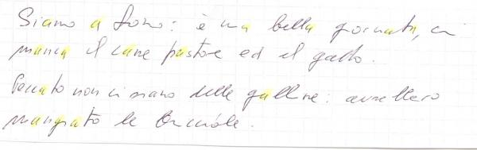
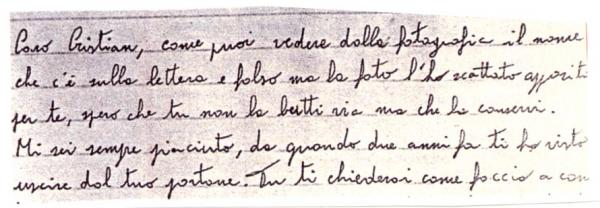

2. Passionate temperament
Moving from affective to sexual inclinations, we are going to start with a temperament not highly frequent but interesting from a psychological point of view: passionate temperament, where love and sexuality support each other as there is no split between what touches feeling in depth and what is wanted by the Ego at a physical level.
To be able to feel passion is a psychic inclination we are now going to analyze as independent from its object and also from the experience of falling in love; it implies a number of basic psychological requirements: to be able to sense strongly – at an energetic level – gender differences, a psychic structure showing no trace of narrow-mindedness, pedantry, exceeding technique and so on – which have nothing to do with the above-mentioned intuitive understanding – and finally to be able to yield and surrender in spite of danger.
All psychological requisites mentioned above lead directly to the sign Springing, which is the first requisite of passionate temperament; it may be reinforced by the presence of the sign Springing, sign of sudden passionate outburst . In fact, Springing reinforces intuition as “it feels the different feelings’ vibrations as the sound’s vibrations across the air” (CU, 153); moreover, by its very nature, it runs into impulsive actions because any sensation is followed by an immediate reaction.
- Fig. 4 – passionate temperament in Springing-Rushing handwriting


Therefore, the Springing-Rushing combination is basic to define a passionate temperament, meant in a romantic and sexual sense, whilst to be able or not to overwhelm the Ego’s structure depends on the strength of these signs and also on the presence of well-balanced widths and on methodical unevenness.
Letters width much above average (Profused, Dilated) unavoidably enhances passion but weaken the stability of the feeling itself.
Spacing between Words becomes one of the main points, allowing or not the activation of such inclination, because it may contain – at least partially – feelings through the rational mind’s control.
The formal level is important too: when handwriting is too Thrown away “it suggests the individual’s inclination to quench his/her sexual thirst unselectively and unrefinedly.” (T, 509); whilst a more homogeneous formal level (Methodically Uneven), allowed by the presence of Rushing, suggests the presence in the Ego of aesthetic and sentimental needs that cannot be ignored.
In addition to the already mentioned combination, other signs qualify the affective drive in a more specifically sexual direction.
Top opening of A-O, a sign of easy sexual emotion and prolific fecundity “is a sign of the inclination to sexual emotion necessary to understand everything is aimed to arouse the sense apt to awaken erotic activity.” (Att, 118)
- Fig. 5 – Inclination to sexual emotion in Top opening of A-O

{kind=link}
Forward Slant about 7/10, without Spacing between Letters, strongly seeks physical contact because of its need for affective fusion, with no distinction between these two levels.
Other signs suggest inclination to perform sexually not because of a direct impulse to attraction, but because of a yielding due to a weak character, that is with no passion impulse and therefore with no real satisfaction.
The signs Descending, Right Bent Extensions, Negligent – if outstanding – lead to yielding only because one cannot say “no”, as the Ego borders are weak.
Each graphological sign tinges somehow both affective and sexual ways of expression; moreover, all signs which qualify a handwriting somehow-that is all the different personality traits showing-interact inside the individual in a complex fashion.
Talking about a classification as in passionate temperament we have simplified from a didactic point of view in order to describe, by means of extreme examples, what – as an inclination – belongs to everybody as a problem: how affectivity can be connected to sexuality, in order to nourish the Ego at all levels in its need to relate with the other.
Though, theoretically an individual is a unity expressing him/herself consistently in all his/her affective, intellectual, sexual manifestations, in real behavior sexuality can be at a great distance from affectivity, becoming an instinct apparently disconnected from other facets of the Ego.
This drama’s importance appears especially disturbing when – for instance – they are expressed in the form of paedophilia: the individual using them is usually perfectly aware of the negative impact of his behavior, however sexuality has become completely disconnected from the rest of the Ego, so that inside his family and society he lives according to some norms with a firm belief, while in fragments of his private life behaves according to other rules.
Graphologically each kind of onesidedness, each kind of psychological inability to relate shown by a personality structure gives way to a disturbed expression of the Ego, consequently of sexual behavior. From this point of view, starting from different problems of the Ego expressed in the handwriting, we can guess what troubles originate some excruciating sexual problems.
The sign Meticulous, for example, suggests great troubles in psychological understanding and consequent inability to relate, as the Ego is kept as a prisoner by a number of details, miseries, fears and thus ends with secluding itself in its small private world. It is not surprising to discover inclination to paedophilia in the case reported below, characterized by a strong Meticulous: in this case, childhood becomes a mythical sexual imaginary which does not hurt not scares.
- Fig. 6 – Meticolous

{kind=link}
The sign Parallel – even more so if together with Disconnected and Even – possessing feeling coldness leads to a form of sexuality which needs tenacity to compensate its inner emptiness: it may come to cruelty – at least psychological cruelty – because it does not understand the other’s needs.
On-and-Off Carved I – if intense and not compensated by other signs – implies domineering, one-sided and selfish sexuality.
Sharp-for the pleasure of contradiction-likes to vex.
In Jerky – which suggests an inclination to anger because of problems in self-determination, sexual instinct may evolve violently.
Accurate-as all signs related to emotional control-may easily come to use sex in exchange to obtain something else, because hardly yields to passion.
Other signs instead make it more difficult to keep a personality split and urge to facilitate integration of affectivity and sexuality.
Methodically Uneven, sign of original intelligence and feeling, represent a powerful drive to express our uniqueness in all fields, maintaining and facilitating original relationships both in our inner world – among the different parts of the Ego – and with others.
The sign Sinuous, suggesting ability for psychological penetration, is in itself able to integrate fully sentiment affectivity and sexuality, even only to obtain what it aimed to.
Each personality structure represents a world where affective and sexual dynamics interact; these ones interact with gender dynamics and expectations, originating a kind of behavior difficult to be understood without a graphological approach.
We can see how complex the underlying motivation issues can be through the analysis of two cases of extreme sexual behavior.
The handwriting reported below belongs to a famous pornostar: analysis (Disconnected), reasoning (Spacing between Words), Exterior technical precision (Accurate) are all personality inclination to a sexuality – quite coldmindedly – planned to effect, determined by means of strict rigor in order to manipulate the specific sexual openness perceived in the other gender. She can do this because she can disconnect her affectivity from sexuality, therefore thanks to such dissociation-to which this personality is directly inclined-may save her private life’s integrity, at least partly.
{kind=link}
Another kind of feeling coldness appears in the handwriting reported below; this handwriting differs from the previous one because it is characterized by operative continuity, unreduced by the presence of technical analysis (high grade of Disconnected). To be noticed, the stiffness of extensions, links, overall angularity, presence of C angles: self-control apparently leaves no room for any kind of affection feelings. It can therefore keep – at the same time – both unflappability and operative spontaneity at the highest grade and in all situations requested in life, including the sexual field it can gain access to – either for pleasure or for a well-pondered evaluation – if it could be necessary to obtain what it aimed to.
This is Mata Hari’s handwriting.
{kind=link}
These two already-mentioned extreme examples are especially significant in describing the differences that may exist between exterior behavior and real feeling; and also in showing how sentimental, affective and sexual inclinations may play a reinforcing role in determining motivations and subsequent choices about personality expression ways.
- Lidia Fogarolo
- Novembre 29th, 2007